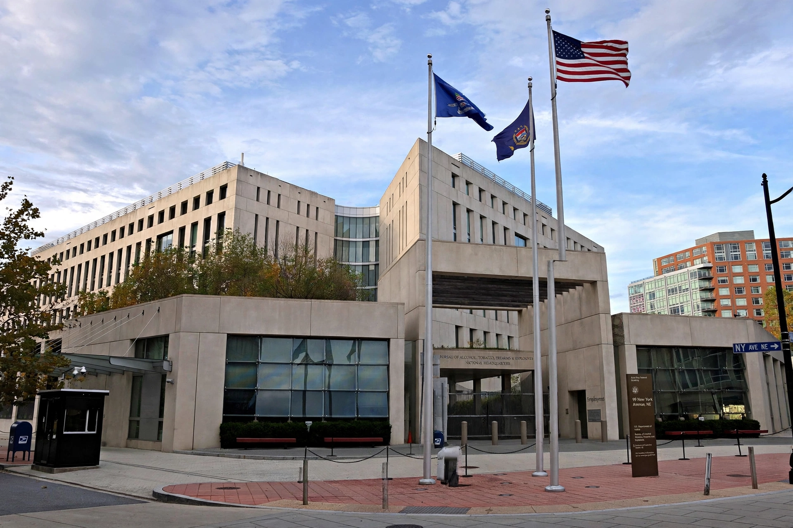

 Seal of the ATF | |
| Abbreviation | ATF |
|---|---|
| Formed | July 1, 1972 |
| Parent agency | U.S. Department of Justice (since 2003) |
| Headquarters | Washington, D.C., U.S. |
| Employees | c. 5,000 (including c. 2,600 special agents) |
| Jurisdiction | Federal law enforcement: firearms, explosives, alcohol, tobacco |
The Bureau of Alcohol, Tobacco, Firearms and Explosives (ATF) is a federal law enforcement agency within the United States Department of Justice. Its responsibilities include investigating and preventing federal offenses involving the unlawful use, manufacture, and possession of firearms and explosives; acts of arson and bombings; and the illegal trafficking of alcohol and tobacco products. The ATF also regulates, via licensing, the sale, possession, and transportation of firearms, ammunition, and explosives in interstate commerce.
The bureau traces its origins to the tax-collecting offices of the 19th century and to Prohibition-era enforcement under the Treasury Department. It became an independent bureau within the Treasury in 1972, charged with enforcing the Gun Control Act of 1968 and federal explosives laws. After the September 11 attacks, the Homeland Security Act of 2002 transferred the ATF's law-enforcement functions to the Department of Justice effective January 2003, while tax and trade functions remained with the new Alcohol and Tobacco Tax and Trade Bureau (TTB) in Treasury.
ATF special agents investigate violent crime involving firearms, armed drug trafficking, and arson-for-profit; the agency operates the National Tracing Center, which traces firearms recovered in crimes, and the National Integrated Ballistic Information Network (NIBIN). ATF also licenses federal firearms dealers, manufacturers, and importers, and inspects them for compliance. Its certified fire investigators and national response teams investigate major fires and explosions.
The agency has been at the centre of major controversies, including the 1992 Ruby Ridge standoff (led by other agencies but involving ATF investigations), the 1993 Waco siege of the Branch Davidian compound, which began with an ATF raid and ended in a fire that killed 76 people, and the "Fast and Furious" gunwalking scandal of 2009–2011, in which ATF agents allowed firearms to be trafficked to Mexico in a failed tracking strategy.